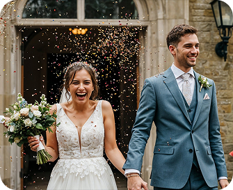

<section class="section is-about">
  <div class="container is-about">
    <svg class="sec-decoration is-about" width="299" height="20">
      <use href="../images/sprite-1.svg#icon-decoration"></use>
    </svg>
    <h2 class="heading-medium about-heading">
      Meet Maria Kovalenko: Your Partner in Capturing Unforgettable Wedding
      Moments
    </h2>
    <p class="about-text">
      With years of experience in wedding photography, Maria specializes in
      capturing genuine emotions and beautiful moments. Her unique approach
      blends artistry with a personal touch, ensuring that each couple's story
      is told through stunning imagery.
    </p>
    <picture>
      <source
        media="(min-width: 1440px)"
        srcset="
          ../images/about-img/about-dec-img.jpg    1x,
          ../images/about-img/about-dec-img@2x.jpg 2x
        "
      />

      <source
        media="(min-width: 768px)"
        srcset="
          ../images/about-img/about-tabl-img.jpg    1x,
          ../images/about-img/about-tabl-img@2x.jpg 2x
        "
      />

      <source
        media="(min-width: 320px)"
        srcset="
          ../images/about-img/about-img.jpg    1x,
          ../images/about-img/about-img@2x.jpg 2x
        "
      />

      
    </picture>
  </div>
</section>
